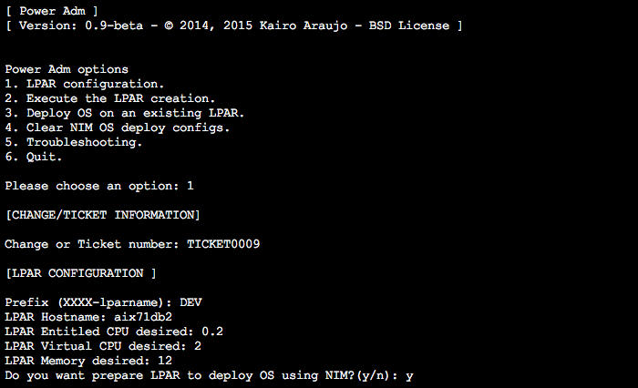

About
PowerAdm is a free (BSD License) and simple tool developed in Python to easily and quickly create an LPAR with their standards and deploy AIX Operating System using NIM Server.
PowerAdm uses a single configuration file and a simple menu/interface in text mode (Like a smitty).
Optionally there is an interface for creating LPAR (Logical Partition) that works with VMware vCenter Orchestrator (VCO).
 |
Principal features
- Text Interface
- Works with VMware vCenter Orchestrator (vCO)
- Create Logical Partition (LPAR) profile
- Supports multiple frames
- Add virtual Ethernet (maximum 3 ethernets), vscsi, vfct(HBA NPIV) and add disk.
- Select the Virtual Switch
- VLAN
- Add vSCSI on two VIOs
- Create Virtual SCSI server on VIO automatically
- Add HBA/NPIV(vfchost) on two VIOs
- Make vfcmap automatically
- Add disk on vSCSI (only if you have Shared Storage Pool)
- Troubleshooting help
- Environment (SEA and NPIV)
- Specific LPAR using ID or searching LPAR (Informations, configurations, NPIV, SEA, SCSI etc)
- Centralized config (poweradm/config.py)
- Deploy SO from the NIM Server
- Organize your IDs!!! Don't you know what is it? Keep reading...
Whoever manages an IBM Power environment through the Hardware Management Console (HMC) knows that it is an easy management interface to create LPARs but we can not say the same when talking about managing the devices IDs, such as virtual network, virtual fiber channel, virtual scsi, etc or managing information about the maximum and minimum memory and CPUs, physical devices, capped, uncapped, and so on.
The objective of this tool is to adopt a standard for IDs based on the LPAR ID and also to facilitate the LPAR creation with no need of expert knowledge, making it easier even for analysts without experienced skills in Power or operators.
Power Adm is a free and simple tool developed in Python to create LPARs easily, quickly and with their standards.
Something that we really consider the differential in this tool is the IDs organization.
In the future:
- Web Interface
- vCO workflow/interface deploy OS Deploys using NIM
Latest release
IDs Structure / Organize your IDs
These IDs are well organized, assisting in the identification of devices, particularly in times of troubleshooting on environments with a large number of LPARs. These IDs also help managing the Live Partition Mobility. Therefore, if well organized, will always remain the same independent of the box.
For this, the following rules were established:
Every LPAR has a maximum number of virtual devices 40 and the following structure:
- Virtual Network IDs will be between 10 and 19
- Virtual SCSI IDs will be between 20 and 29 (default 21 primary VIO, 22 secondary VIO)
- Virtual Fibre Channel IDs will be between 30 and 39 (default 33 primary VIO, 34 secondary VIO)
"VIOS" settings have the following default: Maximum number of virtual devices in the Primary VIO is 3500 and in the Secondary VIO 4500 allowing a total of 500 LPARs on this set of VIOS.
Other sample: If the maximum number of LPAR is 100 the number is changed to 3100 (VIO Primary) and 4100 (VIO Secundary)
Continuing...
Virtual SCSI IDs:
- Primary VIO 1 + 'LPAR ID'
- Secondary VIO 2 + 'LPAR ID'
Fiber Channel IDs:
- Primary VIO 3 + 'LPAR ID'
- Secondary VIO 4 + 'LPAR ID'
Example:
- VIOS1 - ID: 1 (ever)
- Maximum number of virtual IDs: 3500
- VIOS2 - ID: 2 (ever)
- Maximum number of virtual IDs: 4500
LPAR AIX1
- LPAR ID: 11
- Virtual devices:
- 11: Network adapter data
- 12: Network adapter backup
- 21: Virtual SCSI (Server: 111 VIOS1)
- 22: Virtual SCSI (Server: 211 VIOS2)
- 33: Fiber Channel (Server: 311 VIOS1)
- 34: Fiber Channel (Server: 411 VIOS2)
LPAR AIX2
- LPAR ID: 12
- Virtual devices:
- 11: Network adapter data
- 12: Network adapter backup
- 21: Virtual SCSI (Server: 112 VIOS1)
- 22: Virtual SCSI (Server: 212 VIOS2)
- 33: Fiber Channel (Server: 312 VIOS1)
- 34: Fiber Channel (Server: 412 VIOS2)
VIOS1
- LPAR ID: 1
- Virtual devices:
- 111 Virtual SCSI (Client ID: 11 / Virtual Client: 21)
- 112 Virtual SCSI (Client ID: 12 / Virtual Client: 21)
- 311 Fiber Channel (Client ID: 11 / Virtual Client: 33)
- 312 Fiber Channel (Client ID: 12 / Virtual Client: 33)
VIOS2
- LPAR ID: 2
- Virtual devices:
- 211 Virtual SCSI (Client: 11 / Virtual Client: 22)
- 212 Virtual SCSI (Client: 12 / Virtual Client: 22)
- 411 Fiber Channel (Client: 11 / Virtual Client: 34)
- 412 Fiber Channel (Client: 12 / Virtual Client: 34)
In this example we can easily identify which VIO serves the virtual devices, by only looking the partition ID.
Sample: Identifying AIX1 on VIOs
padmin@VIOS1:[/home/padmin]lsmap -all | grep C111 vhost6 U9119.FHB.8297FCR-V3-C111 0x0000000b padmin@VIOS1:[/home/padmin]lsmap -vadapter vhost6 SVSA Physloc Client Partition ID --------------- -------------------------------------------- ------------------ vhost6 U9119.FHB.8297FCR-V3-C111 0x0000000b VTD NO VIRTUAL TARGET DEVICE FOUND padmin@VIOS1:[/home/padmin]lsmap -all -npiv | grep C311 vfchost3 U9119.FHB.8297FCR-V3-C311 11 AIX1 AIX padmin@VIOS1:[/home/padmin]lsmap -npiv -vadapter vfchost3 Name Physloc ClntID ClntName ClntOS ------------- ---------------------------------- ------ -------------- ------- vfchost3 U9119.FHB.8297FCR-V3-C311 11 AIX1 AIX Status:LOGGED_IN FC name:fcs0 FC loc code:U5873.001.992014K-P1-C6-T1 Ports logged in:2 Flags:a<LOGGED_IN,STRIP_MERGE> VFC client name:fcs0 VFC client DRC:U9119.FHB.8297FCR-V11-C33
How is it developed?
It's developed using Python and uses some Shell Scripting. I'm a sysadmin not a developer so sorry if it is not looking great. Your help is important and kindly accept to improve the tool.
If you don't have an HMC and a Power to run tests, don't worry. I've an some code with simulation on createlparconf.py, newid.py. Directory simulation is available upon request.
License
This software is BSD License. Please more details in LICENSE file.
IMPORTANT: IBM, PowerVM (a.k.a. VIOS), smitty are registered trademarks of IBM Corporation in the United States, other countries, or both.
VMware, vCenter, vCenter Orchestrator are registered trademarks of VMware Inc in the United States, other countries, or both.
This project is maintained by Kairo Araujo
Contributors: Bruno Costa, Fernando Costa, Raphael Paiva and Filipi Silva